Vlookup是我们在工作中使用频率非常高的一个函数，但是在实际的使用中经常会出现这样那样的错误，今天就跟大家分析5种vlookup函数错误的原因，以及如何修改才能查找到正确的值
1. 有空格的存在
这个是我们经常遇到的问题，下图中查找返回错误值的原因是在数据表中小张的名字存在空格，所以Excel会认为我查找值小张，与数据表中的小张空格不是一样的字符，就会返回错误值，我们只需要把数据表中小张的空格删除即可得到正确的结果
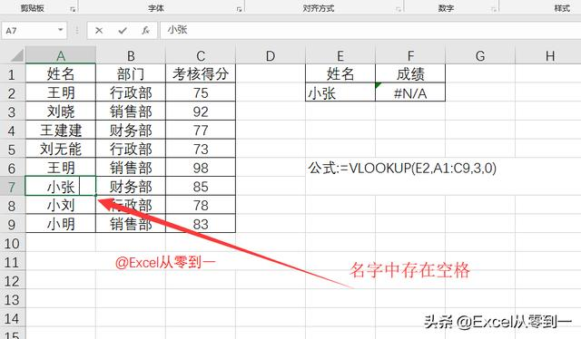
实际工作中我们如何快速的删除空格呢，我们可以使用替换将空格替换为空，按快捷键Ctrl+h调出替换窗口，然后在查找值中输入一个空格，直接点击全部替换即可。如下动图
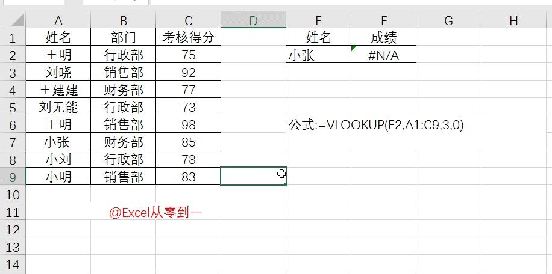
2. 不可见字符
这种问题经常出现在我们从系统导出的数据，如下图所示，我们的公式设置没问题，表格中也没有存在空格，但是还是显示结果错误，这是因为有换行符的存在
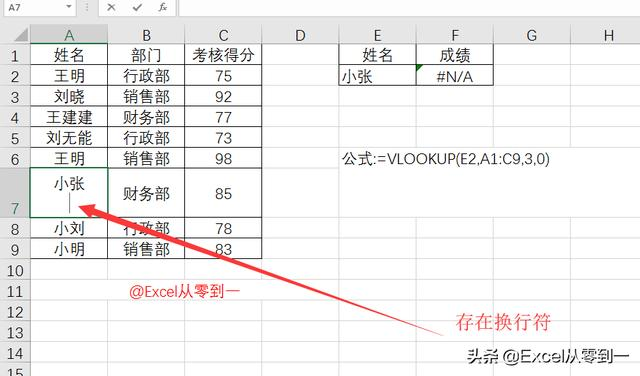
如何快速删除不可见字符呢，我们可以利用分列来快速删除不可见字符，选择数据点击分裂后直接点击完成即可，如下动图，建议大家在从系统导出的数据都可以先进行下这样的操作来删除不可见字符
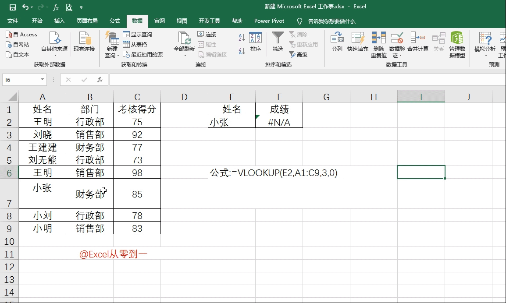
3. 数据格式不同
如下图的错误是因为在查找值中177的格式为数值格式，而在数据表中的177的格式为文本格式，因为格式不同Excel就判定两个不是同一个值，所以会返回错误的值，数据表中的左上角的绿色小三角是提醒我们这个单元格中的数据是文本格式，以后只要遇到这样的左上角带绿色小三角的，它的格式就一定是文本
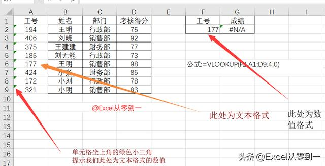
那么我们如何将它批量更改为数值的格式呢，方法很多在这里跟大家介绍两种方法，第一种是利用分列，选择数据点击分列直接点完成，跟去除不可见字符的操作是一样的，这里就不再演示了，第二种方法是利用选择性粘贴，我们先任意输入一个1，然后复制它选择文本格式的数值右键选择性粘贴选择乘即可，如下动图
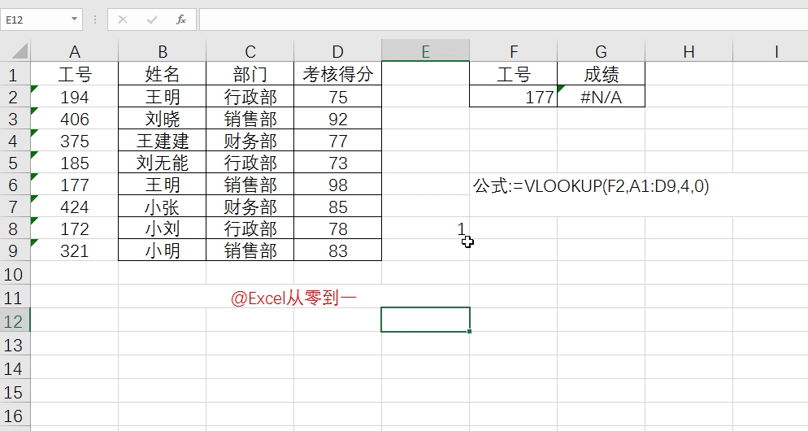
4. 未绝对引用数据区域
这种情况多发生在我们对函数进行拖拽的过程中，如下图所示，我们的查找第一个值的时候完全没有问题，但是在向下拖拉的过程中发生了变化，我们可以看一下194的具体函数公式，它的查找区域为下图标红区域，我们向下拖拉的时候数据区域也向下移动了，而194不在数据区域内
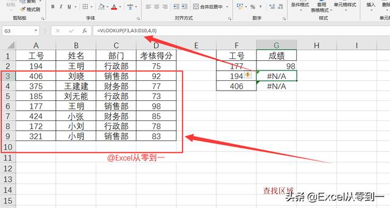
解决办法是将数据其余按F4进行绝对引用就可以了，这里要说明下，vlookup的第一与第二参数都要根据拖拉的具体情况来进行绝对引用或者相对引用
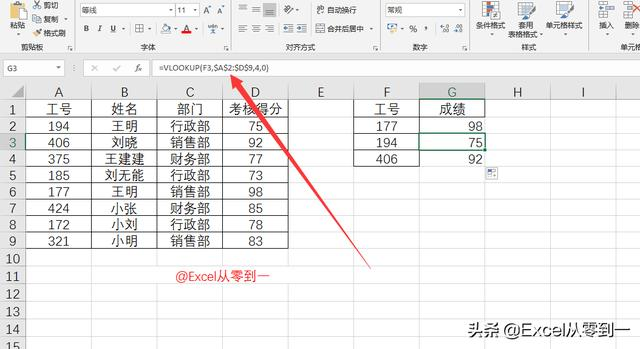
5. 查找值不在数据区域的第一列
这是很多人经常粗心犯的一个错误，vlookup函数的数据区域中第一列必须是查找值所在的列，在下图中数据区域为所有区域，而所有区域的第一列为工号，我们要查找的是姓名
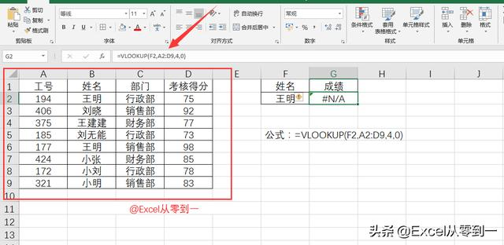
所以我们应该将公式改为下图中以姓名开头
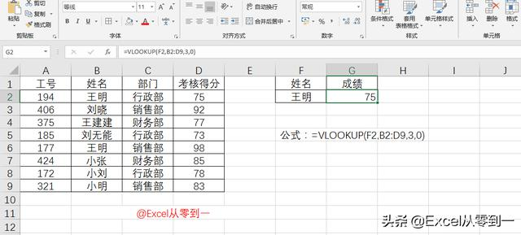
通过以上五个常见的错误我们可以总结下vlooup函数发生几个原因
1. 查找值与数据表中存在空格以及不可见字符
2. 查找值与数据表中的数据格式不相同
3. 查找区域经过拖拉后设置不正确，应根据实际情况选择引用方式
4. 查找区域设置不正确，查找区域必须为查找所在的第一列
以上的错误总结主要是针对vlooup的第一和第二参数来进行总结的，第三参数和第四参数细心点一般不会发生错误，即便是输错了，经过查找也能找出来，第三参数和第四参数记住两句话就可以了
第三参数：要查找的结果在数据区域的第几列就写几
第四参数：精确查找写：0，模糊查找写：1
为什么你的Vlookup查找时总是出错？
鬼谷奇谈 2019-01-25 11:08:41
职场中大家用得最好的可能就是VLOOKUP函数了，但是你总是看别人用的时候很好，而自己用的时候总是出现各种各样的错误，今天给大家说明你的VLOOKUP函数到底是哪里出错了？
01
参数使用错误
查找下面的右边的内容对应的销售额。如下图所示：
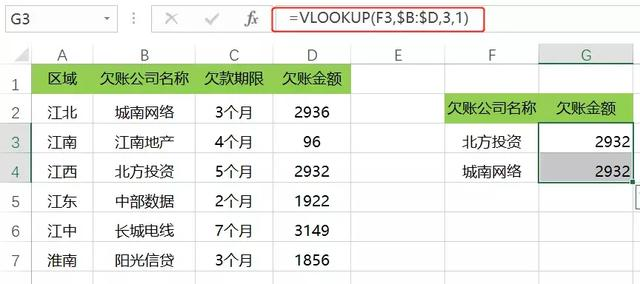
错误：查找结果与实际不符合。
原因：VLOOKUP的最后一个参数有两种选择，一种是0（表示精确查找），另一种是1（表示模糊查找）。所以上述的公式应该修改为：=VLOOKUP(F3,$B:$D,3,0)，最后一个参数也可以省略，但是逗号不能省略。
02
格式不统一
查找公司代码对应的欠款金额。如下图所示：
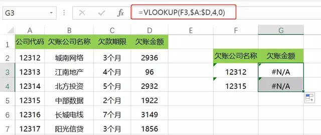
错误：查找结果出现了错误值。
原因：A列的公司代码为数值型，F列为文本型，所以查找时格式不统一出现了错误。公式应该修改为：=VLOOKUP(--F3,$A:$D,4,0)。
03
引用范围未锁定
查找公司代码对应的欠款金额。如下图所示：
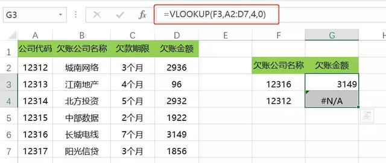
错误：查找结果出现了错误值。
原因：由于查找的数据源区域是未锁定的，在向下填充的过程中数据源会出现随之变化的情况，所以就出现了错误。公式应该修改为：=VLOOKUP(F3,$A$2:$D$7,4,0)。混合引用的切换的快捷键为<F4>。
04
空格或者非可见字符
查找在时候如果目标与引用区域不一致，如下图所示：
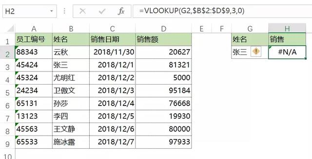
错误：姓名列与查找目标列有空格不一致。
原因：由于查找的目标区域或者目标值不统一，有空格或者不可见的字符，所以就出现了错误。
如果有空格，公式应该修改为：=VLOOKUP(TRIM(G2),$B$2:$D$9,3,0)；
如果有不可见字符，公式修改为：=VLOOKUP(CLEAN(G2),$B$2:$D$9,3,0)
05
引用区域出错
查找姓名对应的销售额。如下图所示：
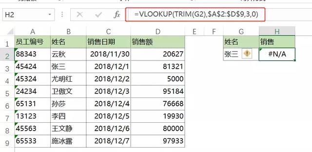
错误：查询结果为错误值。
原因：姓名在左边的数据区域中是第2列，所以VLOOKUP的第二个参数应该从第二列开始。公式修改为：=VLOOKUP(TRIM(G2),$B$2:$D$9,3,0)。
06
特殊作用的字符
查找错误出现错误，公式也没有错。如下图所示：
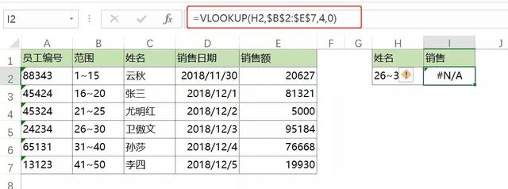
错误：查询结果为错误值。
原因：这里的“~”的特殊的作用，起了通配符的作用，要想查到正确的结果，需要解除通配符，即将这里的“~”替换成“~~”，公式可修改为：：
=VLOOKUP(SUBSTITUTE(H2,"~","~~"),$B$2:$E$7,4,0)
补充1
将错误错处理为空白
if(VLOOKUP(SUBSTITUTE(H2,"~","~~"),$B$2:$E$7,4,0)=="#N/A","",VLOOKUP(SUBSTITUTE(H2,"~","~~"),$B$2:$E$7,4,0))
补充2
VLOOKUP多行多列查找使用公式复制或填充时也运用了多种引用方式。
补充3
函数vlookup可用index+match同等实现
=VLOOKUP(B:B,基础数据!A:D,4,0)
IF函数构建二维内存数组以及vlookup多值、反向、模糊查找
=INDEX(基础数据!A:D,(MATCH(B3,基础数据!A:A,0)),4)